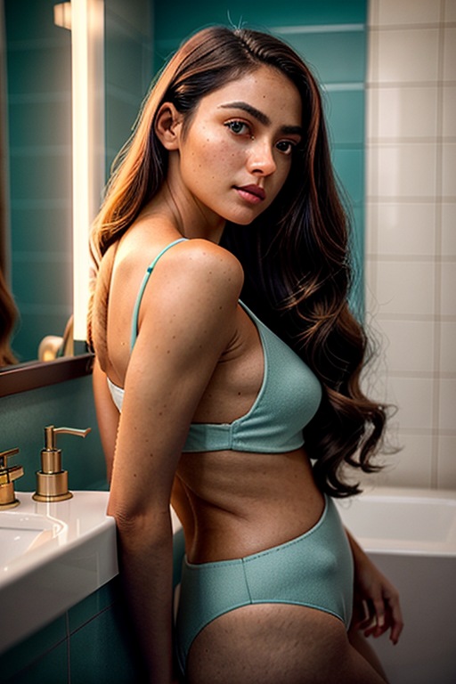

Browse shower images. Page 5 of curated shower-style portrait collection.

Here we highlight page5, aiming for clean structure, quick scanning, and useful context. Internal navigation leads to related items with comparable tone or composition. This reduces bounce and supports exploration within the same theme. Internal navigation leads to related items with comparable tone or composition. This reduces bounce and supports exploration within the same theme. Bookmark the page if it’s useful; updates aim to improve clarity, speed, and overall structure over time. Internal navigation leads to related items with comparable tone or composition. This reduces bounce and supports exploration within the same theme. Bookmark the page if it’s useful; updates aim to improve clarity, speed, and overall structure over time. Alt text and headings are optimized to make the content accessible and to provide consistent cues across the site. Subtle differences in wording help avoid duplication across similar pages. Bookmark the page if it’s useful; updates aim to improve clarity, speed, and overall structure over time.